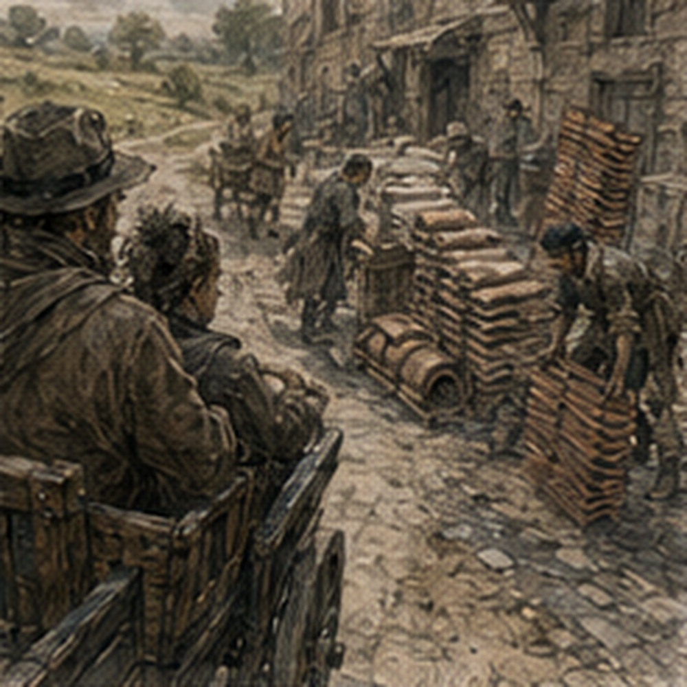

Antonius said no urgency. I waited one day. This was restraint. Probably. The note stayed folded inside my notebook while I did other things. Breakfast. Wound check. A controlled ascent with the keeper below because I wanted my room for the afternoon. One hour upstairs. Actual bed. Actual window. Blue shirt hanging from peg. Brown notebook.
Sword still where I had left it. Then controlled descent because Nerin had said one round trip was acceptable if swelling stayed quiet. It did. Mostly. By the bottom my right thigh burned and both palms felt hot under wraps. Normal enough. Not free. I sat in kitchen. Alden's padded knife remained beside salt. I did not touch it. This also counted as restraint.
Maybe more. The keeper brought tea.
“Antonius?”
I looked at her.
“What?”
“You've read his note six times.”
“Three.”
“Six.”
“Why are you counting?”
“Entertainment.”
I folded note again. No urgency did not mean no decision. It meant Antonius was not forcing timing. That was different. Useful. I had debt. He had labor-credit arrangement. My old labor capacity had included things currently stupid. Carrying. Standing. Field movement. Probably violence. Magic eventually, maybe. Not now.
Current capacity:
count. compare. notice. ask. sit. Annoy people. The last had market value somewhere. I needed to answer him. Not because today. Because I wanted the uncertainty smaller. There.
I sent a note:
I CAN MEET TOMORROW AFTER SECOND BELL.
GROUND FLOOR.
NO LONGER THAN TWO HOURS.
I WILL COME BY CART.
IF THAT DOES NOT WORK, SEND ANOTHER TIME.
I stared. Too much? No. Conditions. Useful.
I added:
NO PAYMENT DUE. I UNDERSTAND.
Important. The keeper's boy carried it. He returned with answer before lunch.
VALE OFFICE. SECOND BELL.
GROUND FLOOR.
ONE HOUR SHOULD SUFFICE.
One hour. Excellent.
*
I wore the blue shirt. This was not for Antonius. Mostly. The keeper looked.
“No.”
She had not spoken.
“Good.”
I hired cart. Transport was becoming boring. Excellent. The cart passed a crew unloading tile. Three men. One woman. Stack. Carry. Turn. Set. My eyes followed automatically. Escape lane clear. Cart blocked partly. One tile stack leaned. I noticed. Then cart moved on. No inspection. No intervention. Not my operation.
The fact that Antonius had crossed SITE did not make sites disappear. It just meant nobody was currently paying me to stand inside them. Fine. I looked away before finding ten more conditions. Antonius's office was in a building I had been to before. Credit. Storage. Collections. People carrying ledgers. People owing money. People being owed money. The front room had changed one desk since last time.
World continued. A clerk recognized me.
“Vale's expecting you.”
“Ground floor?”
She pointed at a side room. Good. No stairs. The room had a table, two chairs, a narrow window, and nothing decorative except a brass scale on shelf. Antonius came in carrying my debt ledger. Of course. He wore dark coat. Clean cuffs. No visible hurry. He looked at blue shirt. Then at crutches. Then at me.
“Improvement.”
“Shirt?”
“Yes.”
Good. I sat. He sat opposite. Ledger between us. No pity. Excellent.
“How are you?”
“Expensive.”
He smiled slightly.
“Medically.”
“Improving. Wound dry. No current infection signs. Revision not expected if healing continues normally. Still fresh. Activity causes swelling. No casting.”
“Stairs?”
“Controlled with spotter. Not unrestricted.”
“Walking?”
“Crutches. Flat ground. Limited. Transport smarter.”
“Carrying?”
“Bad.”
“Standing?”
“Short.”
“Hours?”
“Seated work about two has been tolerable. Depends on transport, posture, wound load, what else I did that day.”
He nodded. No speech.
“What have you done for pay?”
“West Spice count. Guild archive comparison.”
“Amounts?”
“Three copper each.”
“Duration?”
“Spice longer than ideal with breaks. Archive two hours, plus short follow-up.”
“What did you actually do?”
There. Not category. Value. I explained West Spice. Second count. Disputed lots. Five ordinary discrepancies. Freeze disputed lots rather than expand into theft investigation. He listened.
“Why did they need you?”
“They didn't.”
Antonius looked.
“Clarify.”
“They needed a second count. I was available and suitable. Someone else could have done it.”
“Good.”
Why good? He wrote something. Archive. Three records. Different units. Damaged crates. Claimed crates. Approved crates. Payment entries. No fraud. Merra. Do not invent missing facts. He listened longer.
“What was the useful part?”
“Noticing totals were not counting same thing.”
“Could clerk have done it?”
“Yes.”
“Did clerk?”
“No.”
There. Antonius leaned back.
“Better.”
“What?”
“You are separating replaceable from useless.”
Ah.
“I was always replaceable.”
“Yes.”
Rude. Correct.
“Debt does not require uniqueness,” he said. “It requires value greater than the cost of obtaining it.”
There. Commercial. Good.
“What costs do I add?”
“Transport if I pay it. Space. Time. Someone carrying materials to you. Schedule uncertainty. Work selection. Risk if you worsen injury and become unavailable longer.”
There. Not charity. Excellent.
“And what value?”
“That is what we are discussing.”
He opened ledger. Old debt amount remained. I did not need exact number? It existed earlier maybe. Better not restate. He pointed at prior labor credits. Some deliveries. Inventory. Storage work. Other tasks.
“Most of this is currently poor fit.”
“Yes.”
“Some is impossible.”
“Yes.”
“Some is merely expensive.”
“Meaning?”
“You could inspect a warehouse from a chair if someone moved you and brought things. That does not mean I should pay two people to create one worker.”
Correct. I felt annoyed anyway. Good.
“What do you think I can do?”
I asked. Antonius closed ledger.
“First, what do you think?”
Danger. I had prepared. Of course.
“Records comparison. Counts if seated and material comes to me. Contract review maybe. Inventory reconciliation. Technical questions where physical inspection is limited.”
“Limited?”
“I can inspect objects brought to table.”
“Magic?”
“No casting.”
“Magic knowledge?”
“Yes.”
“Reliably?”
I stared.
“Depends.”
“Good.”
He waited. I continued.
“Planning. Maybe route or transfer review from documents.”
“No.”
Immediate.
“Why?”
“Because I would not pay you to review physical operations you cannot currently inspect.”
I bristled.
“I can reason from plans.”
“So can many people.”
“I've done clearance.”
“You have.”
“Successfully.”
“Mostly.”
There. Fuck. Not accusation. Fact. My leg throbbed anyway. Antonius did not soften. Good.
“Also,” he said, “your recent injury makes you likely to overvalue hidden physical conditions in exactly those jobs.”
I stared.
“That's an assumption.”
“Yes.”
“Could be wrong.”
“Yes.”
“You'd reject me based on it?”
“For my money? Currently, yes.”
Fair. I hated it.
“Records?”
“You have evidence.”
“Counts?”
“Evidence.”
“Technical consultation?”
“Some evidence.”
“Magic?”
“Knowledge, maybe. Casting, no.”
“People?”
“What?”
“Negotiation.”
He smiled.
“Absolutely not.”
“Fuck you.”
“You are good at reading people and bad at leaving them alone.”
Rude. Accurate enough to hurt.
“Could be useful.”
“Could. Not as debt labor without a defined transaction.”
Good. No vague manipulator profession.
“Collections?”
“No.”
“Why?”
“You are on crutches.”
“I can talk.”
“People who owe money occasionally become unpleasant.”
“Fair.”
“And I prefer collectors who can leave quickly.”
Very fair.
“Clerical?”
“Some.”
“I hate clerical.”
“You enjoyed archive.”
Fuck.
“How know?”
“Merra mentioned you.”
Carrow.
“What did she say?”
“That you were annoying but readable.”
Highest praise. I smiled despite myself. Antonius noticed.
“Exactly.”
*
Before the second sheet, Antonius asked about the West Spice job again. Not the counting. The stopping.
“You found discrepancies.”
“Yes.”
“Five?”
“Yes.”
“And?”
“Froze disputed lots.”
“Why not continue?”
“Because the job was second count, not theft investigation.”
He tapped finger once.
“That is more useful to me than the count.”
“Why?”
“Because I can hire someone to find irregularities. I need to know whether they will create a larger expense after finding one.”
Rude. Fair.
“You think I create larger expenses.”
“I know you can.”
“Examples?”
He looked at me.
“No.”
“Coward.”
“Efficient.”
Fine.
“What about archive?”
“You stayed inside task.”
“Merra enforced.”
“Still counts.”
“Does it?”
“Yes. Supervision is a cost. If supervision works, that is information too.”
There. I had not thought of supervision as priced input. Of course Antonius had.
“So you might hire me because I stop now?”
“Sometimes.”
“That is insulting.”
“It is improvement.”
Worse. He brought out a second sheet. Not contract. Blank.
He wrote four headings:
TABLE.
ROOM.
SITE.
ROAD.
“What?”
“Where work happens.”
Good.
Under TABLE:
records.
accounts.
small objects.
correspondence.
pricing comparisons.
“Pricing?”
“You notice money.”
“I notice bad prices.”
“Same family.”
Under ROOM:
inventory verification.
customer or supplier meeting.
small inspections.
sorting.
quality questions.
“Standing?”
“Depends room.”
“Carrying?”
“Someone else.”
“Then cost.”
“Yes.”
Under SITE:
warehouse.
yard.
dock.
shop floor. He drew a line through most.
“Not now.”
I hated seeing it. Good.
Under ROAD:
delivery.
route inspection.
escort.
field work. He crossed entire heading.
“Definitely not now.”
“Obviously.”
“Then why face?”
“Because crossing it is dramatic.”
He looked.
“Would you prefer I leave blank?”
“No.”
Good. There. Not therapy. Accounting.
“What about remote review of site records?”
I asked.
“Table.”
“Then site knowledge without site.”
“Sometimes.”
“Good.”
He wrote:
SITE RECORDS AT TABLE.
There.
“Rate?”
I asked. Antonius smiled. Now.
“Not one rate.”
“Why?”
“Because counting spice and reviewing a supplier dispute are not same value.”
“Guild paid three copper both.”
“Guild is not me.”
True.
“I want labor credit based on task value, agreed before.”
“Already?”
“Previously we sometimes used day portions because work was physical and duration correlated reasonably with value.”
“Now it doesn't.”
“Correct.”
There. New provisional basis. Task-specific.
“Transport?”
“If I request you at my premises for debt labor, I cover transport.”
Good.
“If I choose outside work?”
“Your cost.”
“If you send me elsewhere?”
“Depends whether work requires it. Agreed before.”
“Food?”
“No.”
“Rude.”
“You can buy food.”
“Medical interruptions?”
“If you cancel for wound care with notice, no penalty.”
“Without notice?”
“If emergency, no penalty. If you become unreliable, I stop offering labor credit.”
Commercial. Good.
“Maximum duration?”
“You tell me per task.”
“No standing assumption?”
“No.”
“Good.”
“Stairs?”
“I will tell you before accepting if any.”
“Carrying?”
“Same.”
“Magic?”
“No casting work until your healer or instructor clears it and you decide to do it.”
There. He did not own magic. Good.
“Dangerous work?”
“No.”
“What counts dangerous?”
He looked at me.
“Greg.”
“Defined.”
“No cargo transfer. No yard clearance. No escort. No collection where resistance is plausible. No active magical testing. No work around moving machinery.”
“That's broad.”
“Currently.”
Important. Not forever.
“Who decides later?”
“We do, based on evidence.”
Not healer alone. Not him alone. Good.
*
Antonius let me stare. He did not fill silence. Annoying professional habit.
“I can still go to sites,” I said.
“Yes.”
“You crossed them.”
“As debt labor.”
“Difference?”
“You can go wherever you choose. I am deciding what I am willing to purchase from you.”
There. Ownership. Not body permission. Good.
“If Guild asks me for a site job?”
“Your decision.”
“If I take it?”
“Your risk.”
“If it pays?”
“Your money unless we separately agree otherwise.”
Existing debt did not own all income. Good.
“If I learn something useful there?”
“Still does not make me retroactively responsible.”
“You've practiced this sentence.”
“I lend money.”
Fair. I looked again at ROAD.

“Could courier documents by cart.”
“Yes.”
“Then road isn't impossible.”
“Greg.”
“What?”
“If I need a document carried across Carrow, I can hire a courier who does not require a hired cart and wound schedule.”
“Sevren.”
“Among others.”
Right. Comparative advantage. Annoying.
“You are not competing against your old body,” Antonius said.
I looked at him. That sounded dangerously like wisdom.
He continued:
“You are competing against whoever else I can hire for the task.”
Better. Commercial. Good.
“So table work only if I'm better enough to justify arrangement.”
“Or cheaper.”
“Rude.”
“Debt labor can be priced attractively.”
“There he is.”
He smiled. I looked at crossed SITE and ROAD. Anger remained. Not at Antonius exactly. At categories. My old work lived there. Not all. Enough.
“Do you think I'm worth less now?”
I asked. Fuck. That sounded like therapy. Antonius answered commercially anyway.
“For some work, yes.”
Good.
“For some, unchanged. For a few things, perhaps more.”
“Why more?”
“You are harder to use casually.”
I laughed.
“What?”
“Before, if I had an awkward task, I could send you because you were available and capable enough. Now I must decide whether your particular attention is worth arranging around.”
“That makes me more valuable?”
“No. It makes me more expensive. Sometimes expensive forces better selection.”
There. Interesting.
“Also,” he said, “you have recently done two things I would not have thought to hire you for before.”
“Counting and archive?”
“Yes.”
“Those are not impressive.”
“I do not pay for impressive.”
Of course.
“What would you pay for?”
“A problem where the cost of being wrong is larger than the cost of having you look.”
There. Good. Not profession. Function.
“Examples?”
“Invoice disagreement. Inventory mismatch. Supplier claim. Contract terms that do not match delivery records. A piece of equipment whose owner wants a second opinion before paying a specialist.”
“Equipment?”
“Small. Brought to table.”
“Pell?”
“No.”
Good. Independent.
“Magic material?”
“Potentially, if knowledge relevant and no casting.”
Sinkstone flashed. No. Protected. Different.
“Would you send me kestrin?”
Antonius looked.
“Why?”
“Common example.”
“Maybe.”
No thread. Good.
*
He turned blank sheet toward me.
“Provisional.”
TABLE tasks can be offered individually.
ROOM tasks only if seating/access/carrying conditions stated.
SITE and ROAD suspended.
Transport to Vale premises covered by Vale when requested for debt labor.
Task credit agreed before work.
No automatic weekly obligation during injury interval.
Reassess after medical restrictions materially change. I read.
“Debt payment still deferred?”
“Yes.”
“So labor now?”
“Optional.”
“What?”
“You asked to discuss future labor credit. I am willing to offer appropriate tasks during deferral if you want them. I am not requiring them until deferred period ends.”
There. Choice.
“Why?”
“Because if you worsen yourself doing six copper of work and become unable to do sixty later, I am bad at lending.”
Exactly. Not charity. Good.
“And when deferral ends?”
“We reassess.”
“No automatic old schedule?”
“No.”
“Interest?”
“Existing terms unchanged. I did not add injury fee.”
Established. Good. I looked at sheet.
“Copy?”
He rang bell. Clerk came.
“Make copy.”
Normal.
*
We had used forty minutes. I expected more. Antonius looked at blue shirt again.
“What?”
“Nothing.”
“Everyone.”
He smiled.
“Rima?”
How.
“Carrow.”
Fuck.
“Lyssa?”
I stared. His smile widened slightly.
“No.”
“Good.”
“You're terrible.”
“I have tenants, debtors, employees, suppliers, and clerks. People talk.”
“That's not better.”
“It is commercially useful.”
“Do not commercially useful my kissing.”
“I had not heard about kissing.”
Fuck. He laughed. Actually laughed. Rare. I hated him.
“Conversation over.”
“We have twenty minutes.”
“Over.”
“Fine.”
I stood. Crutches. Right foot. Chair. Stable. Antonius watched movement. Not pity. Assessment. Of course.
“Anything else?” he asked.
“No.”
Then:
“Actually. Ground-floor room you offered before.”
“Yes.”
“Still available?”
“Not that one. Rented.”
Good. World.
“Others sometimes?”
“Yes.”
“I'm not moving.”
“I did not ask.”
“Good.”
I left.
*
Before I left, Antonius asked one more question.
“What do you refuse?”
“Currently?”
“Yes.”
“Cargo.”
“Obvious.”
“Field clearance.”
“Yes.”
“Anything requiring me to carry while moving.”
“Good.”
“Long standing.”
“Yes.”
“Uncontrolled stairs.”
“Yes.”
“Work where someone says 'probably accessible.'”
He smiled.
“Specific.”
“Earned.”
“Anything nonphysical?”
I thought.
“Open-ended investigations where the task owner actually wants a narrow answer.”
“Why refuse?”
“Because I am bad at staying narrow.”
He watched me. That one cost.
“Interesting.”
“Do not enjoy.”
“I do.”
“Fuck you.”
“Anything else?”
“Work where I need to pretend certainty I don't have.”
Antonius nodded once. Not praise. Record.
“What do you accept?”
“Ask.”
He laughed.
“Fair.”
The clerk gave me copy. No signature required yet. Not contract. Framework. Good. Cart waited because Vale had arranged it. Transport covered. Already. Efficient bastard. I sat. My shoulders appreciated his self-interest.
*
On way home, we passed green door. Closed daytime. I looked anyway. Blue shirt. Lyssa. Kiss. Different category from debt. Good. Then south road turn. Training yard somewhere beyond. Knife. Another category. Guild tower. Work. Another. My room. Stairs. Body. No single system. Annoying. Maybe healthy. No. Stop.
*
At lodging, keeper asked, “How much?”
“Nothing today.”
“Debt?”
“Still.”
“Work?”
“Optional during deferral.”
She nodded.
“What kind?”
“Table.”
She looked at kitchen table.
“Already have one.”
“Excellent. Antonius can send money here.”
“He cannot.”
“Why?”
“My table.”
Fair. I showed her provisional sheet. She read slower than Antonius.
“Road crossed.”
“Yes.”
“You liked road.”
“Some.”
“Mm.”
No comfort. Good.
“Blue shirt worked?”
I took paper back.
“Fuck you.”
She laughed.
*
Alden's knife was gone. I noticed immediately.
“Where?”
“Boy came.”
“What boy?”
“From Alden.”
“He took it?”
“Yes.”
I was annoyed. Why? Not mine. Temporary. Good.
“Message?”
“Tomorrow maybe Pessa. He'll ask.”
Fine. I wanted knife back. Interesting. Not action.
*
Nerin came for wound check. Dry. No heat. No redness. Swelling moderate from stairs plus meeting.
“Fine,” he said.
I pointed. He corrected.
“Improving.”
Better.
“Casting?”
“No.”
“Had to ask.”
“No, you didn't.”
True.
“Stairs tomorrow?”
“Maybe one direction if swelling down. Stop treating them like appointments.”
Excellent. He was learning. Or I was annoying. Same.
*
Doing nothing useful lasted until I found a loose button on the brown shirt. I could sew. Probably. Young Greg had known? Old Greg definitely had, badly. Needle in keeper's drawer. Thread. I repaired button. Ugly. Functional.
This did not count as useful enough to ruin afternoon. Then I noticed the blue shirt's cuff stitching Rima had correctly refused to discount. Fine. No defect. I checked anyway. Good. I considered trimming beard. This became a twenty-minute operation because one side was denser. Mirror unavailable downstairs. Polished pan. Terrible. I trimmed using reflection. Result maybe worse. Keeper came in. Stopped.
“What?”
“Nothing.”
“Face?”
“Nothing.”
“Is it bad?”
“No.”
Pause.
“Medium.”
Fuck. I found small hand mirror? No. Upstairs. Not worth stair trip. I lived with medium beard. Physical nineteen remained hostile. I spent afternoon doing nothing useful. This was difficult. I read. Napped. Ate. Looked at Antonius sheet. Did not optimize it. Mostly.
I added one note:
ASK TASK VALUE BEFORE ACCEPT.
Then crossed it out. Obvious.
Another:
TRANSPORT INCLUDED IF VALE PREMISES.
Fact. Kept. Under SITE/ROAD crossed categories I almost wrote LATER. Did not. Later was implied. Good.
*
Near supper, Lyssa stopped by. Not recovery committee. She was delivering altered trousers to a tenant upstairs. Normal. She saw me. Blue shirt? Brown today.
“Brown.”
“Fuck.”
She laughed.
“Working?”
“No.”
“Good.”
Everyone. She handed package to keeper.
“Green door tomorrow?”
“Maybe.”
She stared. I smiled.
“Yes.”
“Better.”
She leaned down and kissed me once. Kitchen. Keeper three feet away. I froze. Not because phantom foot. Because keeper. Lyssa left. Keeper continued chopping onion.
“No.”
“I said nothing.”
“Good.”
“Blue tomorrow.”
I threw a cloth at her. Missed. She laughed.
*
Antonius sent no work that day. Good. No one did. The provisional labor sheet sat beside debt ledger note. Debt still existed. My old categories had been crossed out. Some new ones existed. None were identity. Excellent. At dinner I ate too much stew. Then more bread. Nineteen.
After, I reached for salt. Alden was not there to steal it. Knife not there either. I missed both slightly. Annoying.
*
That night phantom toes felt squeezed inside the missing boot. Not the salvaged boot. Some remembered boot. Pressure across nails. Tight leather. I knew there was nothing to loosen. Still reached once. Hand stopped halfway. Fuck. I waited. Sensation eased. No theory. No magic. No notebook. Sleep. Morning swelling low. Good. The blue shirt remained clean enough for later. Also good.
I ate two eggs, then a third because keeper had made extra. She claimed extra was not for me. It became for me. The next morning a Vale runner arrived. Not Guild. Small envelope. I opened.
Possible labor credit, if interested:
Review three supplier invoices against received-goods tallies.
Vale office.
Seated.
Estimated one hour.
Materials at table.
No stairs.
Transport covered.
Credit: two copper. Reply yes or no. There. Actual implementation. No pressure. Two copper. One hour. Could. Did I want? Maybe. I had green door later. Wound check midday. Training maybe if Alden asked. Not all. Capacity. Choice. I read again. The keeper said, “Work?”
“Maybe.”
She groaned.
“Everyone.”
I laughed. Then I looked at the day. Invoice job one hour. Transport. Midday wound check. Green door evening. Could fit physically. Training too? No. If Alden asked, decline. There. Not because work mattered more. Because I wanted Lyssa later. Excellent.
I wrote:
YES.
ONE HOUR.
IF MATERIALS ARE READY.
Then added:
NO EXTENSION WITHOUT ASKING.
Antonius would enjoy that. Two copper would not change debt meaningfully. One hour would not change career meaningfully. Good. Small enough to be work instead of symbol. I sent it. Five minutes later Alden's boy arrived. Of course.
PESSA THIRD BELL. COMING?
I wrote:
NO.
BUSY.
NEXT TIME.
The boy left. I did not explain. I had chosen invoices and kissing over training. This was not a philosophy. It was Tuesday.